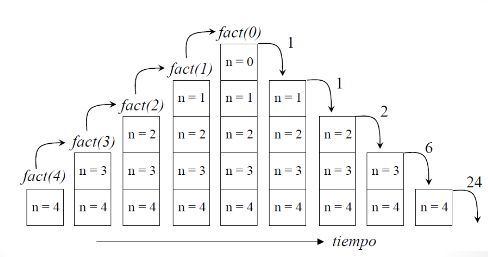
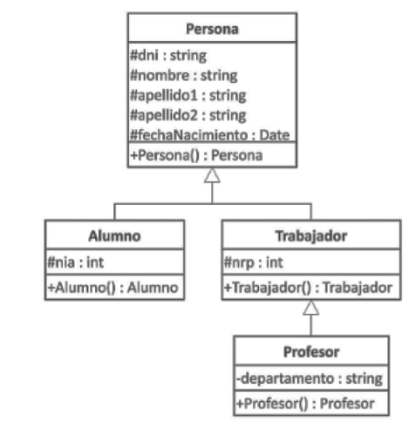
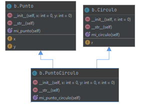
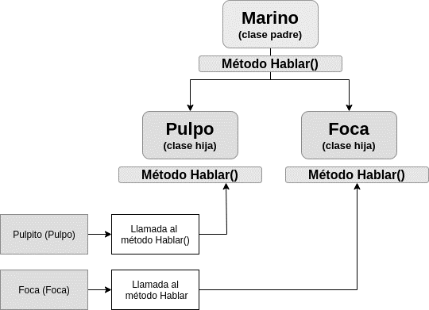
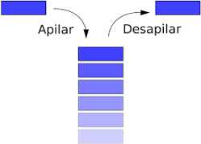
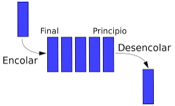
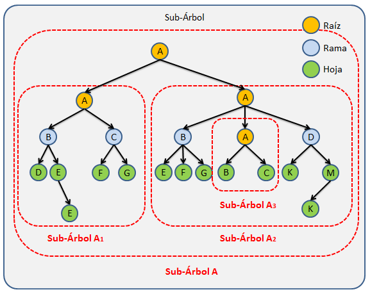
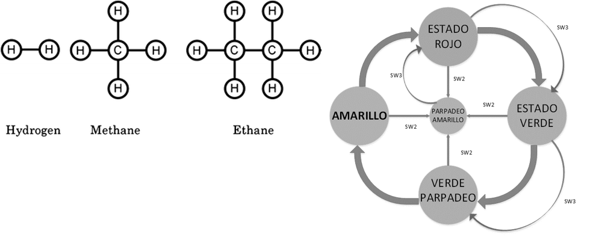
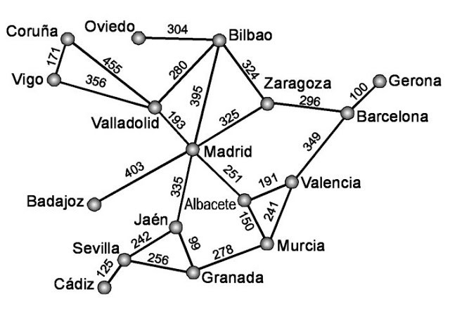
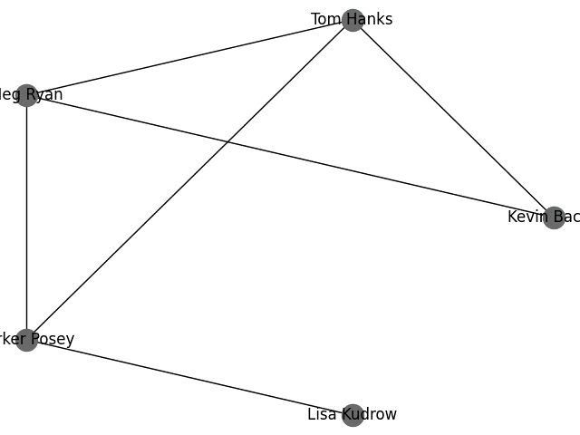

1º DAW - Programación - UT 6
Orientaciones
Orientaciones
Esta unidad de trabajo vamos a conocer las estructuras de datos bajo Python: listas, tuplas, diccionarios conjuntos y más.
Esta unidad es eminentemente práctica se plasmarán todos los conceptos en ejemplos y ejercicios.
Es necesario el conocimiento de las unidades anteriores.
6.1. Secuencias
Una secuencia es un contenedor de objetos de cualquier tipo con un orden asociado, es el concepto de array indexado tradicional de lenguajes como C. Como mantiene el orden se puede insertar el mismo objeto varias veces. Dentro de las secuencias tenemos dos tipos: inmutables (tuplas) y que se pueden modificar (listas).
Las tuplas y las listas mantienen un gran número de métodos en común y el método de acceso, mediante un índice entre corchetes. Del mismo modo se pueden crear secuencias multidimensionales reutilizando la sintaxis de la definición.
Toda secuencia incorpora el método index, que devuelve el índice del objeto y el método count que recogerá el número de ocurrencias de un objeto.
Podemos comparar dos secuencias con los operadores tradicionales: ==, !=, in, encontrar la longitud: len, y borrar cualquier elemento: del Secuencia[index], etc. Además, podemos usar los operadores más (+) y repetición (*). También se pueden usar las siguientes funciones del lenguaje: reverse, max, min, sum, all (todos verdaderos), any (uno al menos verdaero) y not así como el módulo itertools para iteraciones complejas.
Por último, si queremos aplicar una función a toda la secuencia podemos usar las funciones zip (une dos secuencias del mismo tipo), filter (aplica una función filtro a cada elemento de la lista), map (aplica una función a cada elemento de la lista) y enumerate (devuelve un iterador donde cada elemento es una tupla del tipo (índice, valor)).
l = [1, 2, 3, 4]
for ele in l:
if ele == 1:
del l[1] #Qué pasa al borrar dentro de un bucle
print(ele)
l = [1, 2, 3, 4]
def f(a):
return a+2
def fil(a):
if a > 5:
return False
else:
return True
for ele in map(f, l):
print(ele)
for ele in zip([1, 2, 3], ["a", "b", "c", "d"]):
print(ele)
for ele in filter(fil, range(1, 10)):
print(ele)
Acceso a las secuencias
El acceso a los elementos de las secuencias es mediante el operador corchetes ([]), siendo posible la extracción de una parte de la misma usando el operador dos puntos (:) similar a las cadenas, incluso los índices negativos. También podemos recorrer una secuencia mediante un bucle for (en el ejemplo recogemos tanto los valores como los índices a través de la función enumerate).
l = [1, 2, 3, 4]
print(l)
print(l[2])
print(l[2:])
print(l[:2])
print(l[-2])
print(l[1::2])
print(l[::-1])
for index, valor in enumerate(secuencia):
print(index, valor)
for elemento in l:
print(elemento)
l = [1, 2, 3, 4]
for index in range(len(l)):
print(l[index]) # No se usa este mecanismo
6.1.1. Listas
Las listas son un tipo secuencia mutable (se puede cambiar) que guardan el orden de inserción, usadas normalmente para almacenar colecciones de objetos homogéneos pero que pueden almacenar elementos heterogéneos, que utilizan un índice como acceso que empieza en cero. Las listas se pueden construir de diferentes formas:
- Usando un par de corchetes para definir una lista vacía: []
- Usando corchetes, separando los elementos incluidos con comas: [a], [a, b, c]
- Usando una lista intensiva o por comprensión: [x for x in iterable]
- Usando el constructor de tipo: list() o list(iterable)
l = []
l = [1, 2, 3, 4]
l = [x//2 for x in range(5)]
l = list(“abc”) # produce tres elementos en la lista, a, b y c
l = [“abc”] # produce un elemento en la lista: abc
Modificaciones de una lista
Pueden crear y decrecer de forma dinámica:
l.append(“Hola”)
del l[2]
a = [-1, 1, 66.25, 333, 333, 1234.5]
del a[0] # [1, 66.25, 333, 333, 1234.5]
del a[2:4] # [1, 66.25, 1234.5]
del a[:] # []
print(a)
del a
print(a)
Operaciones
|
Operación |
Resultado |
|
s[i] = x |
el elemento i de s es reemplazado por x |
|
s[i:j] = t |
la rebanada de valores de s que van de i a j es reemplazada por el contenido del iterador t |
|
del s[i:j] |
equivalente a s[i:j] = [] |
|
s[i:j:k] = t |
los elementos de s[i:j:k] son reemplazados por los elementos de t |
|
del s[i:j:k] |
borra los elementos de s[i:j:k] de la lista |
|
s.append(x) |
añade x al final de la secuencia (Equivale a s[len(s):len(s)] = [x]) |
|
s.clear() |
elimina todos los elementos de s (Equivale a del s[:]) |
|
s.copy() |
crea una copia superficial de s (Equivale a s[:]) |
|
s.extend(t) o s += t |
extiende s con los contenidos de t (En la mayoría de los casos equivale a s[len(s):len(s)] = t) |
|
s *= n |
actualiza s con su contenido repetido n veces |
|
s.insert(i, x) |
inserta x en s en la posición indicada por el índice i (Equivale a s[i:i] = [x]) |
|
s.pop(i) |
retorna el elemento en la posición indicada por i, y a la vez lo elimina de la secuencia s |
|
s.remove(x) |
elimina el primer elemento de s tal que s[i] sea igual a x |
|
s.reverse() |
invierte el orden de los elementos de s, a nivel interno |
|
s |
True si un elemento de s es igual a x, False en caso contrario |
|
x not in s |
False si un elemento de s es igual a x, True en caso contrario |
|
s + t |
la concatenación de s y t |
|
s * n o n * s |
equivale a concatenar s consigo mismo n veces |
|
s[i] |
El elemento i-esimo de s, empezando a contar en 0 |
|
s[i:j] |
la rebanada de s desde i hasta j |
|
s[i:j:k] |
la rebanada de s desde i hasta j, con paso j |
|
len(s) |
longitud de s |
|
min(s) |
el elemento más pequeño de s |
|
max(s) |
el elemento más grande de s |
|
s.index(x[, i[, j]]) |
índice de la primera ocurrencia de x en s (en la posición i o superior, y antes de j) |
|
s.count(x) |
número total de ocurrencias de x en s |
|
sort(*, key=None, reverse=False) |
Este método ordena la lista in situ (se modifica internamente), usando únicamente comparaciones de tipo <. |
fruits = ['orange', 'apple', 'pear', 'banana', 'kiwi', 'apple', 'banana']
fruits.count('apple')
fruits.count('tangerine')
fruits.index('banana')
fruits.index('banana', 4) # Find next banana starting 4
fruits.reverse()
fruits.append('grape')
fruits.sort()
fruits.pop()
Borrado de elementos
Hay una manera de quitar un ítem de una lista dado su índice en lugar de su valor: la instrucción del. Esta es diferente del método pop(), el cual retorna un valor. La instrucción del también puede usarse para quitar secciones de una lista o vaciar la lista completa (lo que hacíamos antes asignando una lista vacía a la sección).
a = [-1, 1, 66.25, 333, 333, 1234.5]
del a[0] # [1, 66.25, 333, 333, 1234.5]
del a[2:4] # [1, 66.25, 1234.5]
del a[:] # []
del puede usarse también para eliminar variables:
del a
Ordenación
La ordenación de listas es una tarea fundamental ya que, aunque guardan el orden de inserción, no significa que sus elementos estén ordenados. Las listas de Python tienen un método incorporado list.sort() que modifica la lista internamente ordenándola. También hay una función incorporada sorted() que crea una nueva lista ordenada a partir de otra secuencia dejando sin modificar la inicial.
a = [5, 2, 3, 1, 4]
print(sorted(a))
print(a)
a.sort()
print(a)
Tanto list.sort() como sorted() tienen un parámetro clave (key) para indicar una función a la que llamar para comparar dos elementos y poder ordenarlos.
Por ejemplo, aquí hay una comparación de cadenas que no distingue entre mayúsculas y minúsculas:
sorted("This is a test string from Andrew".split(),
key=str.lower)
# ['a', 'Andrew', 'from', 'is', 'string', 'test', 'This']
El valor del parámetro key tienen que ser una función que recoge un único argumento y devuelve una clave para realizar las comparaciones. Un uso frecuente es ordenar objetos complejos utilizando algunos de los índices del objeto como claves.
student_tuples = [
('john', 'A', 15),
('jane', 'B', 12),
('dave', 'B', 10),
]
sorted(student_tuples, key=lambda student: student[2])
# sort by age, index 2
# [('dave', 'B', 10), ('jane', 'B', 12), ('john', 'A', 15)]
Los métodos list.sort() y sorted() aceptan un parámetro reverse con un valor booleano. Este valor se usa para hacer ordenaciones descendentes. Por ejemplo, para obtener los datos de los estudiantes en orden inverso de edad.
sorted(student_tuples, key=lambda student: student[2], reverse=True)
Para más información sobre métodos de ordenación complejos visitar la siguiente dirección
https://docs.python.org/es/3/howto/sorting.html#sortinghowto
Pasar Listas como Parámetros
Como ya hemos visto en Python se puede pasar cualquier tipo de datos en un parámetro, con lo que el uso de las listas como parámetros es muy sencillo. Además, las listas son tipos complejos con lo que el paso se hace por referencia, lo que significa que podremos modificar el contenido de la lista dentro de un método o función sin tener que recurrir a la variable global, pero no podremos crearla o destruirla.
a = [5, 2, 3, 1, 4]
def mi_funcion(p):
if type(p) == list and len(p) > 0:
p[0] = "cambiado"
del p # no hace nada fuera
print(a) # [5, 2, 3, 1, 4]
mi_funcion(a)
print(a) # ['cambiado', 2, 3, 1, 4]
Listas multidimensionales
Debes conocer
Las listas no representan el concepto de Array de otros lenguajes, en donde se definen las dimensiones de forma fija. Para ese funcionamiento hay que utilizar el tipo numpy.array
Como todos los tipos de Python, las listas pueden contener cualquier otro tipo de dato, inclusive otra lista, lo que hace que podamos crear listas de varias dimensiones. La ventaja de las listas al usarlas en varias dimensiones es que no tienen la limitación que tienen los Arrays, cada dimensión puede tener la longitud que necesitemos. Así, podremos tener una lista de dos dimensiones (una tabla) pero cada fila podrá contener diferente cantidad de elementos.
lista = [[1, 2, 3], # Array tradicional
[4, 5, 6]]
print(lista)
print(lista[1]) # acceso a la línea dos
print(lista[1][0]) # línea dos primer elemento
lista = [[1, 2, 3], # Lista multidimensional
[4, 5, 6, 7],
[8]]
print(lista[2][0])
El principal problema que nos presentan las listas multidimensionales es precisamente el hecho de que cada elemento en la misma dimensión puede contener un número diferente de objetos. Este problema es mínimo al recordar que el bucle for de Python itera sobre listas de forma innata.
lista = [[1, 2, 3],
[4, 5, 6, 7],
[8]]
for linea in lista:
for elemento in linea:
print("El elemento es:", elemento)
Ejercicios
Ejercicio Resuelto
Listas Multidimensionales
- Crea un programa que pida diez números reales por teclado, los almacene en un array, y luego muestre todos sus valores.
- Crea un programa que pida diez números reales por teclado, los almacene en un array, y luego muestre la suma de todos los valores.
- Crea un programa que pida diez números reales por teclado, los almacene en un array, y luego lo recorra para averiguar el máximo y mínimo y mostrarlos por pantalla.
- Crea un programa que pida veinte números enteros por teclado, los almacene en un array y luego muestre por separado la suma de todos los valores positivos y negativos.
- Crea un programa que pida veinte números reales por teclado, los almacene en un array y luego lo recorra para calcular y mostrar la media: (suma de valores) / número de valores.
- Crea un programa que pida dos valores enteros N y M, luego cree un array de tamaño N, escriba M en todas sus posiciones y lo muestre por pantalla.
- Crea un programa que pida dos valores enteros P y Q, luego cree un array que contenga todos los valores desde P hasta Q, y lo muestre por pantalla.
- Crea un programa que cree un array con 100 números reales aleatorios entre 0.0 y 1.0, utilizando random(), y luego le pida al usuario un valor real R. Por último, mostrará cuántos valores del array son igual o superiores a R.
- Crea un programa que cree un array de enteros de tamaño 100 y lo rellene con valores enteros aleatorios entre 1 y 10. Luego pedirá un valor N y mostrará en qué posiciones del array aparece N.
- Crea un programa para realizar cálculos relacionados con la altura (en metros) de personas. Pedirá un valor N y luego almacenará en un array N alturas introducidas por teclado. Luego mostrará la altura media, máxima y mínima, así como cuántas personas miden por encima y por debajo de la media.
- Crea un programa que cree dos Arrays de enteros de tamaño 100. Luego introducirá en el primer array todos los valores del 1 al 100. Por último, deberá copiar todos los valores del primer array al segundo array en orden inverso, y mostrar ambos por pantalla.
- Crea un programa que cree un array de 10 enteros y luego muestre el siguiente menú con distintas opciones:
- Mostrar valores.
- Introducir valor.
- Salir.
- La opción ‘a’ mostrará todos los valores por pantalla. La opción ‘b’ pedirá un valor V y una posición P, luego escribirá V en la posición P del array. El menú se repetirá indefinidamente hasta que el usuario elija la opción ‘c’ que terminará el programa.
- Crea un programa que permita al usuario almacenar una secuencia aritmética en un array y luego mostrarla. Una secuencia aritmética es una serie de números que comienza por un valor inicial V, y continúa con incrementos de I. Por ejemplo, con V=1 e I=2, la secuencia sería 1, 3, 5, 7, 9… Con V=7 e I=10, la secuencia sería 7, 17, 27, 37… El programa solicitará al usuario V, I además de N (número de valores a crear).
- Crea un programa que cree un array de enteros e introduzca la siguiente secuencia de valores: 1, 2, 2, 3, 3, 3, 4, 4, 4, 4, 5, 5, 5, 5, etc. hasta introducir 10 diez veces, y luego la muestre por pantalla.
- Crea un programa que pida al usuario 20 valores enteros e introduzca los 10 primeros en un array y los 10 últimos en otro array. Por último, comparará ambos Arrays y le dirá al usuario si son iguales o no.
- Crea un programa que cree un array de tamaño 30 y lo rellene con valores aleatorios entre 0 y 9. Luego ordena los valores del array y los mostrará por pantalla.
- Necesitamos crear un programa para mostrar el ranking de puntuaciones de un torneo de ajedrez con 8 jugadores. Se le pedirá al usuario que introduzca las puntuaciones de todos los jugadores (habitualmente valores entre 1000 y 2800, de tipo entero) y luego muestre las puntuaciones en orden descendente (de la más alta a la más baja).
- Crea un programa que cree un array de tamaño 1000 y lo rellene con valores enteros aleatorios entre 0 y 99. Luego pedirá por teclado un valor N y se mostrará por pantalla si N existe en el array, además de cuantas veces.
Listas Multidimensionales
- Crea un programa que cree una matriz de tamaño 5 x 5 que almacene los números del 1 al 25 y luego muestre la matriz por pantalla.
- Crea un programa que cree una matriz de 10 x 10 e introduzca los valores de las tablas de multiplicar del 1 al 10 (cada tabla en una fila). Luego mostrará la matriz por pantalla.
- Crea un programa que cree una matriz de tamaño N x M (tamaño introducido por teclado) e introduzca en ella N x M valores (también introducidos por teclado). Luego deberá recorrer la matriz y al final mostrar por pantalla cuántos valores son mayores que cero, cuántos son menores que cero y cuántos son igual a cero.
- Necesitamos crear un programa para almacenar las notas de 4 alumnos (llamados “Alumno 1”, “Alumno 2”, etc.) y 5 asignaturas. El usuario introducirá las notas por teclado y luego el programa mostrará la nota mínima, máxima y media de cada alumno.
- Necesitamos crear un programa para registrar sueldos de hombres y mujeres de una empresa y detectar si existe brecha salarial entre ambos. El programa pedirá por teclado la información de N personas distintas (valor también introducido por teclado). Para cada persona, pedirá su género (0 para varón y 1 para mujer) y su sueldo. Esta información debe guardarse en una única matriz. Luego se mostrará por pantalla el sueldo medio de cada género.
6.1.2. Tuplas
Las tuplas son un tipo de secuencias inmutables, ordenadas, que se acceden por índice empezando en cero. La definición de una tupla se lleva a cabo con los paréntesis o el constructor: tuple(). Debemos conocer la tupla vacía: ().
tupla = (1, 3, 5, 7)
for index, valor in enumerate(tupla):
print(index, valor)
Los métodos son los mismos que las lisas exceptuando aquellos que permiten modificación de la misma: asignación (=), añadir (append), etc. Funcionan igual que las listas excepto que son inmutables, este debe ser el tipo elegido para datos que no cambien nunca ya que son muy eficientes.
6.2. Diccionarios
Un objeto de tipo mapping relaciona valores (cuya clave debe poder generar una firma hash y por tanto ser inmutables) con objetos de cualquier tipo. Los mapas son objetos mutables. En este momento solo hay un tipo estándar de mapa, los diccionarios. Los diccionarios se pueden crear usando:
- Una lista separada por comas de pares key: value entre llaves, por ejemplo: {'jack': 4098, 'sjoerd': 4127} o {4098: 'jack', 4127: 'sjoerd'}.
- Un diccionario de compresión {}, {x: x ** 2 for x in range(10)}
- Use el constructor: dict(), dict([('foo', 100), ('bar', 200)]), dict(foo=100, bar=200)
- El diccionario vacío: {}
Los siguientes ejemplos retornan el mismo diccionario {"one": 1, "two": 2, "three": 3}.
a = dict(one=1, two=2, three=3)
b = {'one': 1, 'two': 2, 'three': 3}
c = dict(zip(['one', 'two', 'three'], [1, 2, 3]))
d = dict([('two', 2), ('one', 1), ('three', 3)])
e = dict({'three': 3, 'one': 1, 'two': 2})
f = dict({'one': 1, 'three': 3}, two=2)
a == b == c == d == e == f
Operaciones
|
Operación |
Resultado |
|
s[i] = x |
el elemento i de s es reemplazado por x, si no está se añade |
|
del s[i] |
borra la clave i |
|
s.clear() |
elimina todos los elementos de s |
|
s.copy() |
crea una copia de s |
|
s.pop(key, default) |
retorna el elemento clave indicada por i, y a la vez lo elimina de la secuencia s, si no lo encuentra devuleve default |
|
s.reversed() |
Retorna invirtiendo el orden de los elementos de s |
|
key in s |
True si key está en s |
|
key not in s |
False si key no está en s |
|
len(s) |
longitud de s |
|
get(key[, default]) |
Retorna el elemento dentro de d almacenado bajo la clave key, si key está en el diccionario; si no, retorna default. |
|
items() |
Retorna una nueva vista de los contenidos del diccionario (Pares (key, value)). |
|
keys() |
Retorna una nueva vista de las claves del diccionario |
|
popitem() |
Elimina y retorna una pareja (key, value) del diccionario. Las parejas se retornan en el orden LIFO |
|
setdefault(key[, default]) |
Si key está incluida en el diccionario, retorna el valor almacenado. Si no, inserta con la clave key el valor definido en default y retorna default |
|
update([other]) |
Actualiza el diccionario con las parejas clave/valor obtenidas de other, escribiendo encima de las claves existentes |
|
values() |
Retorna una nueva vista de los valores del diccionario |
|
d | other |
Retorna la unión de d y other |
|
d |= other |
Actualiza de con la unión de d y other |
Los objetos retornados por los métodos dict.keys(), dict.values() y dict.items() son objetos tipo vista o view. Estos objetos proporcionan una vista dinámica del contenido del diccionario, lo que significa que, si el diccionario cambia las vistas reflejan estos cambios. Las vistas de un diccionario pueden ser iteradas para retornar sus datos respectivos y soportan operaciones de comprobación de pertenencia.
Ejercicios
Ejercicio Resuelto
Ejercicio 1
Escribe un programa que pida un número por teclado y que cree un diccionario cuyas claves sean desde el número 1 hasta el número indicado, y los valores sean los cuadrados de las claves.
Ejercicio 2
Escribe un programa que lea una cadena y devuelva un diccionario con la cantidad de apariciones de cada carácter en la cadena.
Ejercicio 3
Vamos a crear un programa donde vamos a declarar un diccionario para guardar los precios de las distintas frutas. El programa pedirá el nombre de la fruta y la cantidad que se ha vendido y nos mostrará el precio final de la fruta a partir de los datos guardados en el diccionario. Si la fruta no existe nos dará un error. Tras cada consulta el programa nos preguntará si queremos hacer otra consulta.
Ejercicio 4
Codifica un programa que nos permita guardar los nombres de los alumnos de una clase y las notas que han obtenido. Cada alumno puede tener distinta cantidad de notas. Guarda la información en un diccionario cuyas claves serán los nombres de los alumnos y los valores serán listas con las notas de cada alumno.
El programa pedirá el número de alumnos que vamos a introducir, pedirá su nombre e irá pidiendo sus notas hasta que introduzcamos un número negativo. Al final el programa nos mostrará la lista de alumnos y la nota media obtenida por cada uno de ellos. Nota: si se introduce el nombre de un alumno que ya existe el programa nos dará un error.
Ejercicio 5
Escribir un programa que implemente una agenda. En la agenda se podrán guardar nombres y números de teléfono. El programa nos dará el siguiente menú:
Añadir/modificar: Nos pide un nombre. Si el nombre se encuentra en la agenda, debe mostrar el teléfono y, opcionalmente, permitir modificarlo si no es correcto. Si el nombre no se encuentra, debe permitir ingresar el teléfono correspondiente.
Buscar: Nos pide una cadena de caracteres, y nos muestras todos los contactos cuyos nombres comiencen por dicha cadena.
Borrar: Nos pide un nombre y si existe nos preguntará si queremos borrarlo de la agenda.
Listar: Nos muestra todos los contactos de la agenda.
6.3. Conjuntos
Python también incluye un tipo de dato para conjuntos (set). Un conjunto es una colección no ordenada y sin elementos repetidos. Los usos básicos de éstos incluyen verificación de pertenencia y eliminación de entradas duplicadas. Los conjuntos también soportan operaciones matemáticas como la unión, intersección, diferencia y diferencia simétrica.
Las llaves o la función set() pueden usarse para crear conjuntos, pero las llaves no se pueden usar para crear un conjunto vacío, en ese caso se crea un diccionario vacío, hay que usar el constructor. Una pequeña demostración.
basket = {'apple', 'orange', 'apple', 'pear', 'orange', 'banana'}
print(basket) # show that duplicates have been removed
# {'orange', 'banana', 'pear', 'apple'}
'orange' in basket # fast membership testing
'crabgrass' in basket
a = set('abracadabra')
b = set('alacazam')
a # unique letters in a
# {'a', 'r', 'b', 'c', 'd'}
a – b # letters in a but not in b
# {'r', 'd', 'b'}
a | b # letters in a or b or both
# {'a', 'c', 'r', 'd', 'b', 'm', 'z', 'l'}
a & b # letters in both a and b
# {'a', 'c'}
a ^ b # letters in a or b but not both
# {'r', 'd', 'b', 'm', 'z', 'l'}
6.4. Comprensión de listas y diccionarios
Las comprensiones ofrecen una manera concisa de crear listas, tuplas o diccionarios. Sus usos comunes son para hacer nuevas listas donde cada elemento es el resultado de algunas operaciones aplicadas a cada miembro de otra secuencia o iterable, o para crear un segmento de la secuencia de esos elementos para satisfacer una condición determinada. Por ejemplo, asumamos que queremos crear una lista de cuadrados.
squares = []
for x in range(10):
squares.append(x**2)
# [0, 1, 4, 9, 16, 25, 36, 49, 64, 81]
Podemos calcular la lista de cuadrados sin ningún efecto secundario haciendo:
squares = list(map(lambda x: x**2, range(10)))
squares = [x**2 for x in range(10)]
Una lista de comprensión consiste en corchetes rodeando una expresión seguida de la declaración for y luego cero o más declaraciones for o if. El resultado será una nueva lista que sale de evaluar la expresión en el contexto de los for o if que le siguen. Por ejemplo, esta lista de comprensión combina los elementos de dos listas si no son iguales:
[(x, y) for x in [1, 2, 3] for y in [3, 1, 4] if x != y]
# [(1, 3), (1, 4), (2, 3), (2, 1), (2, 4), (3, 1), (3, 4)]
combs = []
for x in [1,2,3]:
for y in [3,1,4]:
if x != y:
combs.append((x, y))
Si la expresión es una tupla (como en (x, y) en el ejemplo anterior), debe estar entre paréntesis.
vec = [-4, -2, 0, 2, 4]
# create a new list with the values doubled
[x*2 for x in vec] #[-8, -4, 0, 4, 8]
# filter the list to exclude negative numbers
[x for x in vec if x >= 0] # [0, 2, 4]
# apply a function to all the elements
[abs(x) for x in vec] # [4, 2, 0, 2, 4]
# call a method on each element
freshfruit = [' banana', ' loganberry ', 'passion fruit ']
[weapon.strip() for weapon in freshfruit]
# ['banana', 'loganberry', 'passion fruit']
# create a list of 2-tuples like (number, square)
[(x, x**2) for x in range(6)]
# [(0, 0), (1, 1), (2, 4), (3, 9), (4, 16), (5, 25)]
# the tuple must be parenthesized, otherwise an error is raised
[x, x**2 for x in range(6)]
File "<stdin>", line 1, in <module> [x, x**2 for x in range(6)]
Las comprensiones pueden contener expresiones complejas y funciones anidadas.
from math import pi
[str(round(pi, i)) for i in range(1, 6)]
# ['3.1', '3.14', '3.142', '3.1416', '3.14159']
6.5. Recursividad
Las funciones recursivas son funciones que se llaman a sí mismas durante su propia ejecución. Funcionan de forma similar a las iteraciones, pero debe encargarse de planificar el momento en que dejan de llamarse a sí mismas o tendrá una función recursiva infinita.
Las llamadas recursivas suelen ser muy útiles en casos muy puntuales, pero debido a su gran factibilidad de caer en iteraciones infinitas, deben extremarse las medidas preventivas adecuadas y, solo utilizarse cuando sea estrictamente necesario y no exista una forma alternativa viable, que resuelva el problema evitando la recursividad.
def jugar(intento=1):
respuesta = input("¿De qué color es una naranja? ")
if respuesta != "naranja":
if intento < 3:
print("\nFallaste! Inténtalo de nuevo")
intento += 1
jugar(intento) # Llamada recursiva
else:
print("\nPerdiste!")
else:
print("\nGanaste!")
jugar()
def factorial(num):
print("Valor inicial ->", num)
if num > 1:
num = num * factorial(num - 1)
print("valor final ->" ,num)
return num
print(factorial(5)

Hacer un buen uso de la recursividad
- Para simplificar el código.
- Cuando la estructura de datos es recursiva ejemplo: árboles.
- Cuando no exista una solución iterativa simple.
Ventajas y Desventajas
Ventajas
- Son más cercanos a la descripción matemática.
- Generalmente más fáciles de analizar
- Se adaptan mejor a las estructuras de datos recursivas.
- Los algoritmos recursivos ofrecen soluciones estructuradas, modulares y elegantemente simples.
Desventajas
- µ La recursividad consume mucha memoria y tiempo de ejecución.
- µ La recursividad puede dar lugar a la redundancia (resolver el mismo problema más de una vez)
Ejemplos
Ejercicio Resuelto
Desarrollar la sucesión de Fibonacci
Desarrollar el problema de las torres de Hanoi
6.6. Herencia
La herencia es la capacidad que tienen las clases de usar las características ya declaradas en otras clases para su propia declaración. La herencia genera una relación de padres e hijos en las clases, una jerarquía, en la que las clases que heredan se sitúan en la parte inferior de la jerarquía, y las clases de las que se heredan en la parte superior.

En la herencia influye la visibilidad de las propiedades y métodos, recordemos que puede ser pública, privada o protegida. En el primer caso la heredará siempre, en el segundo nunca y en el tercero también se heredará, pero para uso interno nada más de la clase hija.
Una vez explicada la herencia, tenemos que recordar que bajo Python todos los métodos y propiedades son públicos, no existe ningún otro tipo de visibilidad, solo son sugerencias (Protegida: _ y Privada: __).
Dentro de los tipos de herencia simple o múltiple que se puede implementar, Python eligió el modelo múltiple en contra de la mayoría de lenguajes POO. Este modelo impone muchos problemas en el mecanismo de inicialización desde las clases hijas, pero es mucho más flexible.
Sintaxis
Para crear una clase que herede de una o varias otras, no hay más que añadir a la definición de la clase unos paréntesis y separar por comas todas las clases desde las que hereda.
class Persona:
def __init__(self):
self.dni = 0
self.nombre = ""
self.apellido_1 = ""
self.apellido_2 = ""
self.fecha_nacimiento = ""
class Alumno(Persona):
def __init__(self):
super().__init__()
self.nia = -1
class Trabajador(Persona):
def __init__(self):
super().__init__()
self.nrp = -1
class Profesor(Trabajador):
def __init__(self):
super().__init__()
self.departamento = ""
profesor_1 = Profesor()
profesor_1.nombre = "César"
profesor_1.nrp = 1
profesor_1.departamento = "Informática"
print(profesor_1.nombre, profesor_1.nrp,
profesor_1.departamento)

class Punto:
def __init__(self, x: int = 0, y: int = 0):
self.x = x
self.y = y
def __str__(self):
return "({},{})".format(self.x, self.y)
@property
def mi_punto(self):
return "Punto"
class Circulo:
def __init__(self, r: int = 0):
self.r = r
def __str__(self):
return "({})".format(self.r)
@property
def mi_circulo(self):
return "Circulo"
class PuntoCirculo(Punto, Circulo):
def __init__(self, x: int = 0, y: int = 0, r: int = 0):
# inicilización clases padre.
# no se puede usar super al ser varias clases
Punto.__init__(self, x, y)
# solo aquí hay que pasar el self
Circulo.__init__(self, r)
# sobrescritura de un método heredado
def __str__(self):
return "({},{},{})".format(self.x, self.y, self.r)
@property
def mi_punto_circulo(self):
return "PuntoCirculo"
print(Punto(2, 3))
print(Circulo(4))
print(PuntoCirculo(5, 6, 7))
print(
PuntoCirculo().mi_punto,
PuntoCirculo().mi_circulo,
PuntoCirculo().mi_punto_circulo)
Independientemente del tipo de herencia, es muy importante inicializar al padre siempre antes de empezar con nuestras propias inicializaciones en el método __init__, así nos aseguramos que todas las estructuras de datos están creadas.
class Punto:
def __init__(self, x: int = 0, y: int = 0):
self.__x = x
self.__y = y
def __str__(self):
return "({},{})".format(self.__x, self.__y)
@property
def mi_punto(self):
return "Punto"
class Circulo:
def __init__(self, r: int = 0):
self._r = r
def __str__(self):
return "({})".format(self._r)
@property
def mi_circulo(self):
return "Circulo"
class PuntoCirculo(Punto, Circulo):
def __init__(self, x: int = 0, y: int = 0, r: int = 0):
# inicilización clases padre.
# no se puede usar super al ser varias
Punto.__init__(self, x, y)
# solo aquí hay que pasar el self
Circulo.__init__(self, r)
# sobrescritura de un método heredado
def __str__(self):
return "({},{},{})".format(self._Punto__x, self._Punto__y, self._r)
@property
def mi_punto_circulo(self):
return "PuntoCirculo"
print(Punto(2, 3))
print(Circulo(4))
print(PuntoCirculo(5, 6, 7))
print(
PuntoCirculo().mi_punto,
PuntoCirculo().mi_circulo,
PuntoCirculo().mi_punto_circulo)
Misma versión de las clases anteriores, pero intentando utilizar propiedades “protegidas” y “privadas” bajo Python, como se puede ver no existe ningún tipo de control.
Ejercicio
Ejercicio Resuelto
Desarrolla
- Escriba una clase Multimedia para almacenar información de objetos de tipo multimedia (películas, discos, mp3...). Esta clase contiene título, autor, formato y duración como atributos. El formato puede ser uno de los siguientes: wav, mp3, midi, avi, mov y dvd. El valor de todos los atributos se pasa por parámetro en el momento de crear el objeto. Esta clase tiene, además, un método para devolver cada uno de los atributos y un método __str__ que devuelve la información del objeto.
- Escriba una clase Pelicula que herede de la clase Multimedia anterior. La clase Película tiene, además de los atributos heredados, un actor principal y una actriz principal. Se permite que uno de los dos sea nulo, pero no los dos. La clase debe tener dos métodos para obtener los dos nuevos atributos y debe sobrescribir el método __str__ para que devuelva, además de la información heredada, la nueva información.
- Escriba una clase Disco que herede de la clase Multimedia ya realizada. La clase Disco tiene, además de los elementos heredados, un atributo para almacenar el género al que pertenece (rock, pop, dance, etc.). La clase debe tener un método para obtener el nuevo atributo y debe sobrescribir el método __str__ para que devuelva, además de la información heredada, la nueva información.
- Escriba una clase MultimediaMain que cree dos objetos Pelicula y los muestre por pantalla y después pida datos al usuario para crear dos objetos disco y mostrarlos por pantalla.
Sobreescritura de métodos
La herencia permite compartir código entre clases, pero hay ocasiones en que dicho código no se ajusta al comportamiento esperado por la clase hija. En aquellos casos en los que sea esta la situación, podemos sobrescribir cualquier método de la clase padre simplemente rescribiéndolo, como en el ejemplo siguiente la clase Punto3D sobrescribe todos los de la clase padre.
from math import sqrt
class Punto:
def __init__(self, x=0, y=0):
self.x = x
self.y = y
def __str__(self):
return "({},{})".format(self.x, self.y)
def distancia(self, punto):
distancia = None
if isinstance(punto, Punto):
distancia = sqrt((punto.x - self.x)**2 +
(punto.y - self.y)**2)
return distancia
class Punto3D(Punto):
def __init__(self, x=0, y=0, z=0):
super().__init__(x, y) # inicialización del padre
self.z = 0
def __str__(self):
return "({},{},{)".format(self.x, self.y, self.y)
def distancia(self, punto):
distancia = None
if isinstance(punto, Punto3D):
distancia = sqrt((punto.x - self.x) ** 2 +
(punto.y - self.y) ** 2 +
(punto.z - self.z) ** 2)
return distancia
En ocasiones, necesitaremos acceder a los cálculos o procesos que hace la clase padre desde los métodos que estamos sobrescribiendo. Para invocar a un método de la clase padre se usa la nomenclatura super().nombre_método(), facilitándole los parámetros que sean necesarios, no está restringido exclusivamente al constructor, se puede utilizar desde cualquier método de la clase hija.
Es muy importante llamar siempre al inicializador de la clase padre al principio del de la clase hija para crear todas las estructuras necesarias en la jerarquía. Todos aquellos métodos no sobrescritos serán accesibles de forma normal (self) a través de la herencia.
Sobrecarga de Métodos
Los leguajes fuertemente tipados obligan que los parámetros tengan un único tipo. Esta restricción hace que, si definimos un método con una firma (tipos de parámetros y número de ellos junto al valor devuelto) y necesitamos utilizarlo para otra firma diferente, tengamos que crear dos métodos distintos.
Function sumar_enteros(x:int, y:int):int
Function sumar_cadenas(x:string, y:string): int
Para minimizar estas definiciones, la POO permite que el nombre del método sea el mismo en estos casos siempre que la firma sea diferente y se determinará en tiempo de ejecución, cuando se sepan los tipos con los que se llama al método, cuál usar.
Function sumar(x:int, y:int):int
Function sumar(x:string, y:string): int
Function sumar(x:int, y:string): int
Function sumar(x:string, y:int): int
Por contra, los lenguajes débilmente tipados como Python, no necesitan este mecanismo, ya que los parámetros aceptarán cualquier tipo de entrada. Esta ventaja en la definición, también implica una desventaja, el no saber el tipo del parámetro con lo que nos obliga a realizar conversiones que antes no hacían falta.
Function sumar(x, y)
Si x es cadena x = convertir_entero(x)
Si y es cadena y = convertir_entero(y)
Si x es entero and y es entero # x e y pueden ser de otros tipos no cadena o entero
Devolver x + y
Sino
Devolver error
Métodos especiales o mágicos.
Bajo Python se denominan métodos mágicos a todos aquellos que son llamados de forma automática por parte del sistema en respuesta a algún evento o necesidades de ejecución. Por ejemplo, al crear un objeto: __init__, etc. Estos métodos empiezan y terminan sus nombres con dos subrayados (__). A continuación mostramos una pequeña selección.
|
Queremos… |
Escribimos… |
Y se ejecuta… |
|
Inicialar un objeto |
x = MyClass() |
x.__init__() |
|
Representación “official” en format cadena |
repr(x) |
x.__repr__() |
|
Usado por las funciones printf y str |
str(x) |
x.__str__() |
|
Para iterar: devuelve el iterador |
iter(seq) |
seq.__iter__() |
|
Para iterar: siguiente valor |
next(seq) |
seq.__next__() |
|
Número de elementos |
len(s) |
s.__len__() |
|
Pertenencia al conjunto |
x in s |
s.__contains__(x) |
|
Recoger un atributo existente |
x[key] |
x.__getitem__(key) |
|
Establecer un atributo existente |
x[key] = value |
x.__setitem__(key, value) |
|
Borrar un atributo |
del x[key] |
x.__delitem__(key) |
|
Suma |
x + y |
x.__add__(y) |
|
Resta |
x - y |
x.__sub__(y) |
|
Multiplicación |
x * y |
x.__mul__(y) |
|
División |
x / y |
x.__truediv__(y) |
|
División entera |
x // y |
x.__floordiv__(y) |
|
Modulo |
x % y |
x.__mod__(y) |
|
Suma |
x += y |
x.__iadd__(y) |
|
Resta |
x -= y |
x.__isub__(y) |
|
Multiplicación |
x *= y |
x.__imul__(y) |
|
División |
x /= y |
x.__itruediv__(y) |
|
División entera |
x //= y |
x.__ifloordiv__(y) |
|
Modulo |
x %= y |
x.__imod__(y) |
|
Igualdad |
x == y |
x.__eq__(y) |
|
Distinto |
x != y |
x.__ne__(y) |
|
Menor que |
x < y |
x.__lt__(y) |
|
Menor o igual que |
x <= y |
x.__le__(y) |
|
Mayor que |
x > y |
x.__gt__(y) |
|
Mayor o igual que |
x >= y |
x.__ge__(y) |
|
Cuando se pide una copia |
copy.copy(x) |
x.__copy__() |
|
Copia en profundidad |
copy.deepcopy(x) |
x.__deepcopy__() |
|
Al entrar en un bloque with |
with x: |
x.__enter__() |
|
Al salir del bloque with |
with x: |
x.__exit__(exc_type, exc_value, traceback) |
|
Destructor del objeto |
del x |
x.__del__() |
Para saber más
Ejemplo
class Punto:
def __init__(self, x=0, y=0):
self.x = x
self.y = y
def __add__(self, other):
return Punto(self.x+other.x, self.y+other.y)
def __str__(self):
return f"({self.x},{self.y})"
print(Punto(1, 2) + Punto(3, 4))
# excerpt from zipfile.py
class _ZipDecrypter:
def __init__(self, pwd):
self.key0 = 305419896
self.key1 = 591751049
self.key2 = 878082192
for p in pwd:
self._UpdateKeys(p)
def __call__(self, c):
assert isinstance(c, int)
k = self.key2 | 2
c = c ^ (((k * (k^1)) >> 8) & 255)
self._UpdateKeys(c)
return c
zd = _ZipDecrypter(pwd)
bytes = zef_file.read(12)
h = list(map(zd, bytes[0:12]))
Con los métodos mágicos podemos hacer que una clase se pueda usar en una estructura for in.
class Invertir:
def __init__(self, cadena):
self.cadena = cadena
self.puntero = len(cadena)
def __iter__(self):
return (self)
def __next__(self):
if self.puntero == 0:
raise (StopIteration) # Obligatorio para finalizar
self.puntero = self.puntero - 1
return (self.cadena[self.puntero])
# Declara iterable y recorre caracteres
cadena_invertida = Invertir('Iterable')
for caracter in cadena_invertida:
print(caracter, end='-')
Métodos gétters and setters
Ya conocemos las propiedades, pero también podemos usar otro mecanismo para crear propiedades dinámicamente además de lo ya tratado en el tema anterior. En Python se hacen según el siguiente ejemplo:
class Punto:
def __init__(self, x: int = 0, y: int = 0):
self.x = x
self.y = y
def __getattr__(self, name):
if name == "long":
return self.long
def __setattr__(self, key, value):
if key == "long" and value in range(1, 10):
self.__dict__[key] = value
miPunto = Punto(2, 3)
miPunto.long = 5
print(miPunto.long) # 5
print(miPunto.lon) # None
miPunto.long = 10
print(miPunto.long) # 5, ya que no cumple la condición de entre 1 y 9, range va de n a m-1
Toda la lógica se introduce dentro de los métodos especiales __getattr__ y __setattr__ que serán llamados respectivamente cuando haya que recoger el valor de una propiedad que no existe o establecer su valor.
En el ejemplo anterior vemos que cuando se establece una propiedad (long) se crean sus restricciones de acceso y si no existe se añade al diccionario del objeto (__dict__) cuyo efecto es crear la propiedad long en dicho objeto.
Resumen
- La herencia es la capacidad que tienen las clases de usar las características ya declaradas en otras clases para su propia declaración
- Genera una relación de padres e hijos, una jerarquía
- En la herencia influye la visibilidad de las propiedades y métodos,
- Pública
- Privada
- Protegida
- Bajo Python todos los métodos y propiedades son públicos
- Existen dos tipos de herencia
- Simple
- Múltiple
- Python utiliza la herencia múltiple
6.7. Clase object
En Python todo es un objeto, aunque no lo parezca, por lo que tiene que existir una jerarquía bien definida, y por tanto un padre de dicha jerarquía. Bajo Python será la clase object la que actúa como padre. Si no definimos un padre como mínimo en la definición de una clase, será el sistema el que asigne la clase object como ancestro, es imprescindible que toda clase tenga al menos un padre excepto object.
Esta clase implementa la funcionalidad básica para todo objeto, encontramos los siguientes métodos y propiedades: '__class__', '__delattr__', '__dir__', '__doc__', '__eq__', '__format__', '__ge__', '__getattribute__', '__gt__', '__hash__', '__init__', '__init_subclass__','__le__', '__lt__', '__ne__', '__new__', '__reduce__', '__reduce_ex__', '__repr__', '__setattr__', '__sizeof__', '__str__', '__subclasshook__'.
6.8. Polimorfismo
El polimorfismo implica que, si en una porción de código se invoca un determinado método de un objeto, podrán obtenerse distintos resultados según la clase del objeto. Utilizando polimorfismo podemos invocar un mismo método de diferentes objetos y obtener diferentes resultados según la clase de estos. Podemos llamar a un método exactamente igual a otro y el intérprete automáticamente detectará a cuál de ellos nos referimos según diversos parámetros, por ejemplo, el tipo de dato que pasamos como argumento al momento de llamarlo, la clase a la que pertenece, o hasta podemos especificarle a que método nos referimos. El polimorfismo está estrictamente ligado al concepto de Herencia
class Marino: #Clase Padre
def hablar(self): #Método Hablar
print ("Hola..")
class Pulpo(Marino): #Clase Hija
def hablar (self): #Método Hablar
print ("Soy un Pulpo")
class Foca(Marino): #Clase Hija
def hablar (self, mensaje): #Método Hablar
print (mensaje)
Pulpito = Pulpo() #Instancia
Foca = Foca() #Instancia
Pulpito.hablar()
Foca.hablar("Soy una foca, este es mi mensaje")
Como podemos ver en el ejemplo, el nombre del método es el mismo, cuando lo llamamos Python sabe cuál ejecutar porque se lo dice la clase a la que pertenece el objeto (en ese caso pulpito, pertenece a la clase “pulpo” por ende obviamente llamará al método hablar de dicha clase y no de ninguna otra.)

6.9. tipo de un objeto
Un de las tareas más comunes a la hora de implementar nuestros métodos es determinar la clase de un objeto. Esto nos puede hacer falta al ser Python un lenguaje que determina en tiempo de ejecución el tipo de un parámetro, en vez de en tiempo de compilación. Como ya hemos comentado, nuestros métodos pueden que necesiten realizar conversiones o comprobar tipos antes de efectuar una operación para evitar excepciones de ejecución.
Para poder determinar el tipo de un objeto tenemos dos “funciones”: instanceof y type. La primera pide dos parámetros, el tipo y el objeto y devuelve True o False; la segunda devuelve una cadena con el tipo correspondiente que podremos comparar con el operador is.
mi_variable = 10
print(isinstance(mi_variable, int))
print(isinstance(mi_variable, str))
print(type(mi_variable))
print(type(mi_variable) is int)
6.10 Atributos de clase
Las variables de clases son definidas en la cabecera de la clase, pero nunca dentro de un método. Estas variables serán accesibles a todos los objetos de la clase a través de la nomenclatura NombreClase.variable_clase, no a través del objeto self (aunque si no existe la propiedad de instancia también accederemos a ella a través de self). La propiedad es compartida entre todos los objetos o, mejor dicho, es única para todos los objetos y cualquiera que la modifique se reflejará en los demás. También se puede acceder como si fuera una variable estática, con lo que es accesible al resto del programa.
class Clase:
valor_de_clase = 0
def metodo(self):
print(self.valor_de_clase)
clase_1 = Clase()
clase_2 = Clase()
clase_1.metodo()
clase_2.metodo()
Clase.valor_de_clase += 1
clase_1.metodo()
clase_2.metodo()
clase_1.valor_de_clase += 3 # crea una propiedad local
clase_1.metodo()
clase_2.metodo()
Clase.valor_de_clase += 1
clase_1.metodo() # ya accede a la local
clase_2.metodo()
print(Clase.valor_de_clase)
6.11. Métodos de clase
Un método de clase esta enlazado a la clase en vez de a la instancia, con lo que no necesita un objeto para poder utilizarlo. Es muy similar al estático que veremos más adelante, pero en este caso toma como primer parámetro la clase (atributo cls) por la que puede acceder a las variables de clase directamente a través del parámetro en vez del nombre de clase, por lo que puede modificar el estado de la clase directamente.
# Python program to demonstrate
# use of class method and static method.
from datetime import date
class Person:
def __init__(self, name, age):
self.name = name
self.age = age
# a class method to create a Person object by birth year.
@classmethod
def fromBirthYear(cls, name, year):
return cls(name, date.today().year - year)
# a static method to check if a Person is adult or not.
@staticmethod
def isAdult(age): # No se le pasa ni el objeto ni la clase
return age > 18
person1 = Person('mayank', 21)
person2 = Person.fromBirthYear('mayank', 1996)
print (person1.age)
print (person2.age)
print (Person.isAdult(22))
6.12. Clases y métodos estáticos
Un método estático es aquel que no necesita instanciar un objeto para llamarlo. Para definirlo, al igual que el punto anterior trataremos la clase como ABCMeta y con el decorador @staticmethod definiremos el método. No tomará parámetros de clase (cls) u objeto (self) solo podrá acceder a las variables de clase a través del nombre de clase y no podrá modificar el estado de clase directamente.
# Python program to demonstrate
# use of class method and static method.
from datetime import date
class Person:
def __init__(self, name, age):
self.name = name
self.age = age
# a class method to create a Person object by birth year.
@classmethod
def fromBirthYear(cls, name, year):
return cls(name, date.today().year - year)
# a static method to check if a Person is adult or not.
@staticmethod
def isAdult(age):
return age > 18
person1 = Person('mayank', 21)
person2 = Person.fromBirthYear('mayank', 1996)
print (person1.age)
print (person2.age)
6.13. Clases y métodos abstractos
Un método abstracto es aquel que obliga a la clase hija a sobrescribirlo. Para la creación de métodos abstractos es necesario importar el módulo abc con al menos dos funcionalidades: abstractmethod y ABCMeta. Deberemos definir la clase heredando de ABCMeta y a continuación determinar qué métodos son abstractos o la clase entera.
6.14. Métodos finales
Un método final es aquel que no puede ser sobrescrito por las clases hijas, se implementó a partir de la versión 3.8 con el decorador @final, se debe importar del paquete typing y calificar la clase entera o el método que deseemos.
6.15. Ejemplos
from abc import abstractmethod
from abc import ABCMeta as ABCMeta
from typing import final
class miClaseAbstracta(metaclass=ABCMeta):
def __init__(self):
self.valor = 0
@abstractmethod
def miMetodoAbstracto(self, valor: int):
self.valor = valor
@staticmethod
def miMetodoEstatico():
print("Si")
@final
def miMetodoFinal(self):
print("Si")
class miClase(miClaseAbstracta):
def miMetodoAbstracto(self, valor: int):
self.valor = valor
print(self.valor)
def miMetodoFinal(self): # debería lanzar un error
print("No")
mc = miClase()
mc.miMetodoAbstracto(5)
miClase.miMetodoEstatico()
mc.miMetodoEstatico()
mc.miMetodoFinal()
6.16. Ejercicios
Actividad
Escriba una clase Coche de la que van a heredar CocheCambioManual y CocheCambioAutomatico. Los atributos de los coches son la matrícula, la velocidad y la marcha. Para este ejercicio no se permite la marcha atrás, por tanto, no se permiten ni velocidad negativa, ni marcha negativa. En el constructor se recibe el valor de la matrícula por parámetro y se inicializa el valor de la velocidad y la marcha a O. Además, tendrá los siguientes métodos:
- get_matrícula: que devuelve el valor de la matrícula.
- get_marcha(): devuelve el valor de la marcha.
- gel Velocidad(): devuelve el valor de la velocidad
- acelerar(): recibe por parámetro un valor al acelerar el coche.
- frenar(): recible por parámetro un valor al frenar el coche.
- __str__(): devuelve en forma de String la información del coche.
- cambiar_marcha: recibe por parámetro la marcha a la que se tiene que cambiar el coche.
La clase CocheCambioManual sobrescribe el método cambiar_marcha() y lo hace público, para que pueda ser llamado desde cualquier clase. No permite que se cambie a una marcha negativa.
La clase CocheCambioAutomatico sobrescribe los métodos acelerar() y frenar() para que cambie automáticamente de marcha conforme se va acelerando y frenando.
Genere una clase CocheMain que cree dos objetos de cada clase, y pruebe a acelerar, frenar y cambiar_marcha en cada uno con valores positivos y negativos.
Actividad
Se plantea desarrollar un programa que permita la gestión de una empresa agroalimentaria que trabaja con tres tipos de productos:
- Productos frescos
- Productos refrigerados
- Productos congelados
- Todos los productos llevan esta información común: fecha de caducidad y número de lote. A su vez, cada tipo de producto lleva alguna información específica.
- Los productos frescos deben llevar la fecha de envasado y el país de origen.
- Los productos refrigerados deben llevar el código del organismo de supervisión alimentaria.
- Los productos congelados deben llevar la temperatura de congelación recomendada.
Actividad
Desarrollar una clase llamada Punto que:
- Tenga dos atributos.
- Tenga un constructor con dos parámetros que inicialice los dos atributos.
- El constructor por defecto (sin parámetros) que inicialice los dos atributos al valor que se quiera.
- Tenga un método calcular_distancia_desde que recibe un parámetro de tipo Punto y que devuelve la distancia euclídea.
Desarrollar una clase llamada Circulo que:
- Tenga dos atributos de tipo Punto (centro del círculo) y radio (float).
- Tenga un constructor con dos parámetros de tipo Punto y float que inicialice los dos atributos.
- El constructor por defecto (sin parámetros) que inicialice los dos atributos al valor que se quiera.
- El constructor con tres parámetros de tipo float que inicialice los dos atributos.
- Tenga un método calcular_distancia_desde que recibe un parámetro de tipo Punto y que devuelve la distancia euclídea al centro.
- Tenga un método calcular_area que no recibe ningún parámetro y devuelve el área.
- Tenga un método calcular_logitud que no recibe ningún parámetro y devuelve la longitud de la circunferencia.
Desarrollar una clase llamada Triangulo que:
- Tenga tres atributos de tipo Punto.
- Tenga un constructor con tres parámetros de tipo Punto que inicialice los dos atributos.
- Tenga un método calcular_distancia_desde que recibe un parámetro de tipo Punto y que devuelve la distancia euclídea al primer punto.
- Tenga un método calcular_area que no recibe ningún.
- Tenga un método calcular_perimetro que no recibe ningún parámetro y devuelve el perímetro.
Desarrollar una clase llamada Practica1 que en su método main:
- Cree e inicialice dos objetos de la clase Punto y muestre la distancia entre ambos.
- Cree un objeto de la clase Circulo y muestre su área, perímetro y distancia a uno de los dos puntos creados al comienzo.
- Cree un objeto de la clase Triangulo y muestre su área, perímetro y distancia a un nuevo punto.
6.17. Interfaces
En la POO un interfaz es un conjunto de métodos, sin ningún código generalmente, que estamos obligados a implementar cuando lo definimos en una clase. El interfaz se definió para solucionar los problemas de los lenguajes de herencia simple en la que tenían que heredar de varias clases y no era posible. En Python no se presente este problema al tener herencia múltiple. El otro problema que da solución un interfaz es definir un conjunto de métodos (protocolo de comunicaciones) de obligada implementación, en este caso bajo Python se puede usar este concepto con las clases y métodos abstractos que ya hemos estudiado, definiendo toda la clase y sus métodos como abstractos sin ningún tipo de implementación.
from abc import ABC, abstractmethod
class AccountingSystem(ABC):
@abstractmethod
def create_purchase_invoice(self, purchase):
pass
@abstractmethod
def create_sale_invoice(self, sale):
pass
Ejemplo de interfaz bajo PHP que implementa herencia simple.
interface Automovil {
public function getTipo();
public function getRuedas();
}
class Coche implements Automovil {
public function getTipo(){
echo "Coche";
}
public function getRuedas(){
echo "4";
}
}
class Moto implements Automovil {
public function getTipo(){
echo "Moto";
}
public function getRuedas(){
echo "2";
}
}
6.18 Decoradores
Los decoradores alteran de manera dinámica la funcionalidad de una función, método o clase sin tener que hacer subclases o cambiar el código fuente de la clase decorada. Los decoradores y su utilización en nuestros programas nos ayudan a hacer nuestro código más limpio, a autodocumentarlo y, a diferencia otros lenguajes, no requieren que nos aprendamos otro lenguaje de programación distingo (cómo pasa con las anotaciones de Java por ejemplo). En su utilización podemos simular la programación orientada a aspectos (AOP) o utilizarlos para añadir sistemas de control a nuestras funciones, de log, caché, ... Las posibilidades son infinitas. Los decoradores forman parte de Python desde la versión 2.4 aportan:
- Reducen el código común y repetitivo (el llamado código boilerplate).
- Favorecen la separación de responsabilidades del código
- Aumentan la legibilidad y la mantenibilidad
- Los decoradores son explícitos.
Hemos utilizado decoradores a la hora de crear nuestras funciones: @staticmethod, @classmethod, @final, pero en este curso no vamos a ver cómo crearlos.
6.19. Generadores
Son funciones que nos permitirán obtener sus resultados poco a poco. Es decir, cada vez que llamemos a la función nos darán un nuevo resultado. Por ejemplo, una función para generar todos los números pares que cada vez que la llamemos nos devuelva el siguiente número par.
Para construir generadores sólo tenemos que usar la orden yield. Esta orden devolverá un valor (igual que hace return) pero, además, congelará la ejecución de la función hasta la próxima vez que le pidamos un valor en la instrucción siguiente a yield.
def pares():
index = 1
# En este caso definimos un bucle infinito
while True:
# Devolvemos un valor
yield index*2
index = index + 1
6.20. Excepciones
Definición
Aunque una declaración o expresión sea sintácticamente correcta, puede generar un error cuando se intenta ejecutar. Los errores detectados durante la ejecución se llaman excepciones y se pueden gestionar.
Tipos
Python trata todos los errores de la misma forma, como excepciones, pero utiliza dos categorías para indicar la severidad del error: Excepciones y Warnings. Las primeras deben ser capturadas y tratadas y para las segundas se puede configurar el sistema para ignorarlas. El mecanismo usado para controlar la gestión de los warnings es el filtro de advertencias, que controla si las advertencias se ignoran, se muestran o se convierten en errores (planteando una excepción). Se definen los siguientes warnings.
|
Clase |
Descripción |
|
Warning |
Esta es la clase principal para todas las clases que pertenecen a la categoría de advertencia. Es una subclase de Exception. |
|
UserWarning |
La categoría por defecto para warn(). |
|
DeprecationWarning |
Categoría principal para advertencias sobre características obsoletas cuando esas advertencias están destinadas a otros desarrolladores de Python (ignoradas por defecto, a menos que sean activadas por el código en __main__). |
|
SyntaxWarning |
Categoría principal para las advertencias sobre características sintácticas dudosas. |
|
RuntimeWarning |
Categoría principal para las advertencias sobre características dudosas de tiempo de ejecución. |
|
FutureWarning |
Categoría principal para las advertencias sobre características obsoletas cuando esas advertencias están destinadas a los usuarios finales de aplicaciones escritas en Python. |
|
PendingDeprecationWarning |
Categoría principal para las advertencias sobre las características que serán desaprobadas en el futuro (ignoradas por defecto). |
|
ImportWarning |
Categoría principal para las advertencias que se activan durante el proceso de importación de un módulo (se ignoran por defecto). |
|
UnicodeWarning |
Categoría principal para las advertencias relacionadas con Unicode. |
|
BytesWarning |
Categoría principal para las advertencias relacionadas con bytes y bytearray. |
|
ResourceWarning |
Categoría base para las advertencias relacionadas con el uso de los recursos. |
Jerarquías
En Python, todas las excepciones deben ser instancias de una clase que se derive de BaseException. En una instrucción try con una cláusula except que menciona una clase determinada, esa cláusula también controla las clases de excepción derivadas(hijas), es decir, si capturamos una excepción también se capturarán todas sus hijas si no lo hacemos explícitamente antes. Dos clases de excepción que no están relacionadas mediante subclases (hermanas o herederas de hermanas) nunca son equivalentes, incluso si tienen el mismo nombre.
BaseException
+-- SystemExit
+-- KeyboardInterrupt
+-- GeneratorExit
+-- Exception
+-- StopIteration
+-- StopAsyncIteration
+-- ArithmeticError
| +-- FloatingPointError
| +-- OverflowError
| +-- ZeroDivisionError
+-- AssertionError
+-- AttributeError
+-- BufferError
+-- EOFError
+-- ImportError
| +-- ModuleNotFoundError
+-- LookupError
| +-- IndexError
| +-- KeyError
+-- MemoryError
+-- NameError
| +-- UnboundLocalError
+-- OSError
| +-- BlockingIOError
| +-- ChildProcessError
| +-- ConnectionError
| | +-- BrokenPipeError
| | +-- ConnectionAbortedError
| | +-- ConnectionRefusedError
| | +-- ConnectionResetError
| +-- FileExistsError
| +-- FileNotFoundError
| +-- InterruptedError
| +-- IsADirectoryError
| +-- NotADirectoryError
| +-- PermissionError
| +-- ProcessLookupError
| +-- TimeoutError
+-- ReferenceError
+-- RuntimeError
| +-- NotImplementedError
| +-- RecursionError
+-- SyntaxError
| +-- IndentationError
| +-- TabError
+-- SystemError
+-- TypeError
+-- ValueError
| +-- UnicodeError
| +-- UnicodeDecodeError
| +-- UnicodeEncodeError
| +-- UnicodeTranslateError
+-- Warning
+-- DeprecationWarning
+-- PendingDeprecationWarning
+-- RuntimeWarning
+-- SyntaxWarning
+-- UserWarning
+-- FutureWarning
+-- ImportWarning
+-- UnicodeWarning
+-- BytesWarning
+-- ResourceWarning
Captura
Es posible escribir programas que gestionen determinadas excepciones. Véase el siguiente ejemplo, que le pide al usuario una entrada hasta que ingrese un entero válido, pero permite al usuario interrumpir el programa (usando Control-C o lo que soporte el sistema operativo); nótese que una interrupción generada por el usuario es señalizada generando la excepción KeyboardInterrupt.
while True:
try:
x = int(input("Please enter a number: "))
break # fin del while
except ValueError:
print("Oops! That was no valid number. Try again...")
La declaración try funciona de la siguiente manera:
- Primero, se ejecuta la cláusula try (la(s) linea(s) entre las palabras reservadas try y la except).
- Si no ocurre ninguna excepción, la cláusula except se omite y la ejecución de la cláusula try finaliza.
- Si ocurre una excepción durante la ejecución de la cláusula try el resto de la cláusula se omite. Entonces, si el tipo de excepción coincide con la excepción indicada después de la except, la cláusula except se ejecuta, y la ejecución continua después de la try.
- Si ocurre una excepción que no coincide con la indicada en la cláusula except se pasa a los try más externos; si no se encuentra un gestor, se genera una unhandled exception (excepción no gestionada) y la ejecución se interrumpe con un mensaje.
Una declaración try puede tener más de un except, para especificar gestores para distintas excepciones, Una clase en una cláusula except es compatible con una excepción si es de la misma clase o de una clase derivada de la misma por lo que el orden de las sentencias except es muy importante.
class B(Exception):
pass
class C(B):
pass
class D(C):
pass
for cls in [B, C, D]:
try:
raise cls()
except D:
print("D")
except C:
print("C")
except B:
print("B")
En el ejemplo anterior si las cláusulas except estuvieran invertidas (con except B primero), habría impreso B, B, B — se usa la primera cláusula except coincidente.
En el ejemplo anterior si las cláusulas except estuvieran invertidas (con except B primero), habría impreso B, B, B — se usa la primera cláusula except coincidente.
Puede existir un último except omitiendo el nombre de la excepción capturada y servir como comodín para capturar cualquiera no indicada, así como un bloque else opcional, el cual, cuando está presente, debe seguir a los except y se ejecutará si el código dentro de try no genera errores.
for arg in sys.argv[1:]:
try:
f = open(arg, 'r')
except OSError:
print('cannot open', arg)
else:
print(arg, 'has', len(f.readlines()), 'lines')
f.close()
La cláusula except puede especificar una variable después del nombre de excepción para recoger los datos de la excepción y tratarla de forma adecuada.
try:
raise Exception('spam', 'eggs')
except Exception as inst:
print(type(inst)) # the exception instance
print(inst.args) # arguments stored in .args
print(inst) # __str__ allows args to be printed directly,
x, y = inst.args # unpack args
print('x =', x)
print('y =', y)
Para finalizar se puede incluir un bloque finally que se ejecutará siempre en última instancia.
try
…
} finally {
# bloque que siempre se ejecutará el último
# independientemente de si hay o no excepción
# después del bloque else si se tiene que ejecutar
}
Los gestores de excepciones no se encargan solamente de las excepciones que ocurren en el bloque try, también gestionan las excepciones que ocurren dentro de las funciones que se llaman (inclusive indirectamente) dentro del bloque try.
Generación de Excepciones
La declaración raise permite al programador forzar a que ocurra una excepción específica. Por ejemplo:
raise NameError('HiThere')
El único argumento de raise indica la excepción a generarse. Tiene que ser o una instancia de excepción, o una clase de excepción (una clase que hereda de Exception). Si se pasa una clase de excepción, la misma será instanciada implícitamente llamando a su constructor sin argumentos:
raise ValueError # shorthand for 'raise ValueError()'
Si es necesario determinar si una excepción fue lanzada, pero sin intención de gestionarla, una versión simplificada de la instrucción raise te permite relanzarla:
try:
raise NameError('HiThere')
except NameError:
print('An exception flew by!')
raise
La cláusula riase permite un sentencia from opcional para habilitar las excepciones en cadena.
# exc must be exception instance or None.
raise RuntimeError from exc
Es muy útil para transformar unas excepciones en otras.
def func():
raise IOError
try:
func()
except IOError as exc:
raise RuntimeError('Failed to open database') from exc
Traceback (most recent call last):
File "<stdin>", line 2, in <module>
File "<stdin>", line 2, in func
OSError
Traceback (most recent call last):
File "<stdin>", line 4, in <module>
RuntimeError: Failed to open database
El encadenado de excepciones se puede deshabilitar utilizando None como parámetro del from.
try:
open('database.sqlite')
except IOError:
raise RuntimeError from None
Traceback (most recent call last):
File "<stdin>", line 4, in <module> RuntimeError
Definición de Excepciones propias
Los programas pueden nombrar sus propias excepciones creando una nueva clase excepción a partir de cualquier otra. Las clases de Excepción pueden ser definidas de la misma forma que cualquier otra clase, pero es habitual mantenerlas lo más simples posible, a menudo ofreciendo solo un número de atributos con información sobre el error que leerán los gestores de la excepción. Al crear un módulo que puede lanzar varios errores distintos, una práctica común es crear una clase base para excepciones definidas en ese módulo y extenderla para crear clases excepciones específicas para distintas condiciones de error.
class Error(Exception):
"""Base class for exceptions in this module."""
pass
class InputError(Error):
def __init__(self, expression, message):
self.expression = expression
self.message = message
class TransitionError(Error):
def __init__(self, previous, next, message):
self.previous = previous
self.next = next
self.message = message
6.21. Ejercicios
Ejercicio Resuelto
Ejercicio A1 – Punto
Necesitamos un método que nos permita crear un objeto Punto con coordenadas aleatorias. Esta funcionalidad no depende de ningún objeto concreto por lo que será estática. Deberá crear un nuevo Punto (utiliza el constructor) con x e y entre -100 y 100, y luego devolverlo (con return).
- crear_punto_aleatorio()
Pruébalo en el main para comprobar que funciona. Crea varios puntos aleatorios con Punto. crear_punto_aleatorio () e imprime su valor por pantalla.
Ejercicio A2 – Persona
El DNI de una persona no puede variar.
La mayoría de edad a los 18 años es un valor común a todas las personas y no puede variar. Crea un nuevo atributo llamado mayoria_edad que no se pueda modificar. Tendrás que inicializarlo a 18 en la declaración. Utilízalo en el método que comprueba si una persona es mayor de edad.
Crea un método validar_dni(String dni) que devuelva true si dni es válido (tiene 8 números y una letra). Si no, devolverá false. Utilízalo en el constructor para comprobar el dni (si no es válido, muestra un mensaje de error y no guardes los valores).
Realiza algunas pruebas en el main para comprobar el funcionamiento de los cambios realizados. También puedes utilizar Persona.validar_dni(…) por ejemplo para comprobar si unos DNI introducidos por teclado son válidos o no (sin necesidad de crear ningún objeto).
Ejercicio A3 – Rectángulo
Necesitamos hacer algunos cambios para que todas las coordenadas estén entre (0,0) y (100,100). Añade a la clase Rectángulo dos atributos llamados min y max. Estos valores son comunes a todos los objetos y no pueden variar. Piensa qué modificados necesitas añadir a min y max.
Utiliza min y max en el constructor y en los setters para comprobar los valores (como de costumbre, si no son correctos muestra un mensaje de error y apliques los cambios).
También necesitamos un método no constructor para crear rectángulos aleatorios. Impleméntalo.
Realiza pruebas en el main para comprobar su funcionamiento.
Ejercicio A4 – Articulo
En España existen tres tipos de IVA según el tipo de producto:
- El IVA general (21%): para la mayoría de productos a la venta.
- El IVA reducido (10%): hostelería, transporte, vivienda, etc.
- El IVA super reducido (4%): alimentos básicos, libros, medicamentos, etc.
Estos tres tipos de IVA no pueden variar y a cada artículo se le aplicará uno de los tres.
Razona qué cambios sería necesario realizar a la clase Articulo e impleméntalos.
Ejercicio B
Define una jerarquía de clases que permita almacenar datos sobre los planetas y satélites (lunas) que forman parte del sistema solar.
Algunos atributos que necesitaremos almacenar son:
- Masa del cuerpo.
- Diámetro medio.
- Período de rotación sobre su propio eje.
- Período de traslación alrededor del cuerpo que orbitan.
- Distancia media a ese cuerpo.
Define las clases necesarias conteniendo:
- Métodos para recuperar y almacenas atributos.
- Método para mostrar la información del objeto.
Define un método, que dado un objeto del sistema solar (planeta o satélite), imprima toda la información que se dispone sobre el mismo (además de su lista de satélites si los tuviera).
El diagrama UML sería:
Una posible solución sería crear una lista de objetos, insertar los planetas y satélites (directamente mediante código o solicitándolos por pantalla) y luego mostrar un pequeño menú que permita al usuario imprimir la información del astro que elija.
Ejercicio C
Implementa una clase llamada Inventario que utilizaremos para almacenar referencias a todos los animales existentes en una tienda de mascotas.
Esta clase debe cumplir con los siguientes requisitos:
- En la tienda existirán 4 tipos de animales: perros, gatos, loros y canarios.
- La clase debe permitir realizar las siguientes acciones:
- Mostrar la lista de animales (solo tipo y nombre, 1 línea por animal).
- Mostrar todos los datos de un animal concreto.
- Mostrar todos los datos de todos los animales.
- Insertar animales en el inventario.
- Eliminar animales del inventario.
- Vaciar el inventario.
Implementa las demás clases necesarias para la clase Inventario.
El diagrama UML sería:
6.22. Estructuras de datos
6.22.1. Pilas
Los métodos de lista hacen que resulte muy fácil usar una lista como una pila, donde el último elemento añadido es el primer elemento retirado (“último en entrar, primero en salir” o LIFO). Para agregar un elemento a la cima de la pila, utiliza append(). Para retirar un elemento de la cima de la pila, utiliza pop() sin un índice explícito.

- Es una estructura LIFO (Last In First Out)
- Se pueden usar las listas como una pila
- Para añadir un elemento a la cima de la pila se usa append().
- Para retirar un elemento de la cima de la pila utiliza pop()
stack = [3, 4, 5]
stack.append(6)
stack.append(7)
stack.pop()
stack.pop()
stack.pop()
6.22.2. Colas
También es posible usar una lista como una cola, donde el primer elemento añadido es el primer elemento retirado (“primero en entrar, primero en salir” o FIFO); sin embargo, las listas no son eficientes para este propósito. Agregar y sacar del final de la lista es rápido, pero insertar o sacar del comienzo de una lista es lento (porque todos los otros elementos tienen que ser desplazados uno a la izquierda).
Para implementar una cola, se utiliza collections.deque el cual fue diseñado para añadir y quitar de ambas partes de forma rápida.

- Es una estructura FIFO (First in First Out)
- Se pueden usar las listas como una cola pero no es eficiente
- Se usa deque del módulo collections
- Para añadir un elemento a la cima de la pila se usa append().
- Para retirar un elemento de la cima de la pila utiliza popleft()
from collections import deque
queue = deque(["Eric", "John", "Michael"])
queue.append("Terry") # Terry arrives
queue.append("Graham") # Graham arrives
queue.popleft() # The first to arrive now leaves
queue.popleft() # The second to arrive now leaves
deque(['Michael', 'Terry', 'Graham'])
6.22.3 Árboles
Las estructuras en árboles son muy utilizadas en informática. Un árbol es una estructura que parte de una única raíz y cada nodo puede tener entre cero y n hijos, pero cada hijo puede tener exclusivamente un padre. Si el número de hijos se establece obligatoriamente a dos, se crean los árboles de decisión o árboles binarios como vemos en el ejemplo a continuación.

- Parte de una única raíz y cada nodo puede tener entre cero y n hijos
- Cada hijo puede tener un único padre
- Los árboles con dos hijos como máximo se denominan binarios
- No hay una clase que los represente directamente
Ejercicio Resuelto
Crear una clase que cree árboles binarios y una operación de recorrido
6.22.4. Grafos
Un grafo es un conjunto de nodos unidos por aristas sin restricciones entre las conexiones y en el cual las aristas pueden tener un peso asociado y pueden o no tener una dirección. Desde Python existen varias librerías para este fin, pero vamos a utilizar networkx.

Con nx.Graph() creamos el grafo (podemos usar nx.DiGraph() para crear un grafo dirigido). Para añadir nodos usamos add_node() para añadir un sólo nodo o add_nodes_from() para añadir varios de una vez. Para las aristas usamos add_edge() o add_edges_from() dependiendo de si queremos agregar una o varias aristas.
Es posible asignar atributos tanto a los nodos como a las aristas. Por ejemplo, podemos especificar que Tom Hanks tiene dos Oscars. Respecto a las aristas, como representan que un actor ha trabajado con otro, podemos añadir un atributo que sea la película en la que ambos han coincidido. Un uso muy habitual que tienen los atributos sobre las aristas es indicar el peso si se trata de un grafo ponderado, mediante el atributo weight.
- Es un conjunto de nodos unidos por aristas sin restricciones entre las conexiones y en el cual las aristas pueden tener un peso asociado y pueden o no tener una dirección
- Se usa el módulo nx para crear grafos no dirigidos (Graph) y dirigidos (DiGraph)

Ejercicio Resuelto

Para saber más
6.23. Casos de prueba
a
6.23.1 Creación
Las pruebas son la base del sólido desarrollo de software. Hay muchos tipos de pruebas, pero el tipo más importante es la prueba unitaria. La prueba unitaria te da mucha confianza de que puedes usar piezas bien probadas como primitivas y confiar en ellas cuando las compongas para crear tu programa. Aumentan tu inventario de código confiable más allá de tu lenguaje y la biblioteca estándar. Además, Python proporciona un gran soporte para escribir pruebas unitarias.
El módulo unittest viene con la biblioteca estándar de Python. Proporciona una clase llamada TestCase, de la que se puede derivar su clase. A continuación, puedes sobrescribir un método setUp() para preparar un dispositivo de prueba antes de cada prueba y/o un método de clase classSetUp() para preparar un dispositivo de prueba para todas las pruebas (no se restablece entre pruebas individuales). Existen métodos correspondientes de tearDown() y classTearDown() que también puedes reemplazar para hacer la liberación.
Aquí están las partes relevantes de nuestra clase SelfDrivingCarTest. Sólo utilizo el método setUp(). Creo una nueva instancia SelfDrivingCar y la almaceno en self.car para que esté disponible en cada prueba.
from unittest import TestCase
class SelfDrivingCarTest(TestCase):
def setUp(self):
self.car = SelfDrivingCar()
El siguiente paso es escribir métodos de prueba específicos para probar que el código está haciendo lo que se supone que debe hacer. La estructura de un método de prueba es bastante estándar:
- Preparar el entorno (opcional).
- Prepara el resultado esperado.
- Llama el código bajo prueba.
- Asegúrate que el resultado real coincida con el resultado esperado.
Hay que tener en cuenta que el resultado no tiene que ser la salida de un método. Puede ser un cambio de estado de una clase, un efecto secundario como añadir una nueva fila en una base de datos, escribir un archivo o enviar un correo electrónico.
Por ejemplo, el método stop() de la clase SelfDrivingCar no devuelve nada, pero cambia el estado interno estableciendo la velocidad en 0. El método assertEqual() proporcionado por la clase base TestCase se utiliza aquí para verificar que el parámetro llamado stop() funcionó como se esperaba.
def test_stop(self):
self.car.speed = 5
self.car.stop()
# Verify the speed is 0 after stopping
self.assertEqual(0, self.car.speed)
# Verify it is Ok to stop again if the car is already stopped
self.car.stop()
self.assertEqual(0, self.car.speed)
En realidad, hay dos pruebas aquí. La primera prueba es asegurarse de que si la velocidad del coche es 5 y si se llama el método stop(), entonces la velocidad se convierta en 0. Luego, la otra prueba es asegurar que nada va mal si se llama a stop() de nuevo cuando el coche ya está detenido.
El número de posibles comprobaciones (assert) son numerosas, comprobar la lista a continuación.
https://docs.python.org/es/3.9/library/unittest.html
Un ejemplo un poco más elaborado.
import unittest
class TestStringMethods(unittest.TestCase):
def test_upper(self):
self.assertEqual('foo'.upper(), 'FOO')
def test_isupper(self):
self.assertTrue('FOO'.isupper())
self.assertFalse('Foo'.isupper())
def test_split(self):
s = 'hello world'
self.assertEqual(s.split(), ['hello', 'world'])
with self.assertRaises(TypeError):
s.split(2)
if __name__ == '__main__':
unittest.main()
6.23.2. Resumen
- Las pruebas son la base del sólido desarrollo de software
- El desarrollo de pruebas se hace bajo el módulo unittest
- Para hacer pruebas crearemos un fichero con una clase nuestra que herede de TestCase
- Cada método de esa clase deberá comenzar por test_xxxx
- En cada método haremos
- Preparar el entorno (opcional).
- Prepara el resultado esperado.
- Llama el código bajo prueba.
- Asegúrate que el resultado real coincida con el resultado esperado.
- Una vez definida la clase con todos los métodos se ejecutará la clase
- Automáticamente se llamarán a todos los métodos
- Las pruebas se hacen dentro del método con assert
- Hay gran cantidad de pruebas a realziar
6.24. Ejercicios
Actividad
Apartado D – BANCO
Vamos a hacer una aplicación que simule el funcionamiento de un banco.
Crea una clase CuentaBancaria con los atributos: iban y saldo. Implementa métodos para:
- Consultar los atributos.
- Ingresar dinero.
- Retirar dinero.
- Traspasar dinero de una cuenta a otra.
Para los tres últimos métodos puede utilizarse internamente un método privado más general llamado añadir(...) que añada una cantidad (positiva o negativa) al saldo.
También habrá un atributo común a todas las instancias llamado interes_anual_basico, que en principio puede ser constante.
La clase tiene que ser abstracta y debe tener un método calcular_intereses() que se dejará sin implementar.
También puede ser útil implementar un método para mostrar los datos de la cuenta.
De esta clase heredarán dos subclases: CuentaCorriente y CuentaAhorro. La diferencia entre ambas será la manera de calcular los intereses:
- A la primera se le incrementará el saldo teniendo en cuenta el interés anual básico.
- La segunda tendrá una constante de clase llamada saldo_minimo. Si no se llega a este saldo el interés será la mitad del interés básico. Si se supera el saldo mínimo el interés aplicado será el doble del interés anual básico.
Implementa una clase principal con función main para probar el funcionamiento de las tres clases: Crea varias cuentas bancarias de distintos tipos, pueden estar en un list si lo deseas; prueba a realizar ingresos, retiradas y transferencias; calcula los intereses y muéstralos por pantalla; etc.
El diagrama UML sería:
Apartado E – EMPRESA Y EMPLEADOS
Vamos a implementar dos clases que permitan gestionar datos de empresas y sus empleados.
Los empleados tienen las siguientes características:
- Un empleado tiene nombre, DNI, sueldo bruto (mensual), edad, teléfono y dirección.
- El nombre y DNI de un empleado no pueden variar.
- Es obligatorio que todos los empleados tengan al menos definido su nombre, DNI y el sueldo bruto. Los demás datos no son obligatorios.
- Será necesario un método para imprimir por pantalla la información de un empleado.
- Será necesario un método para calcular el sueldo neto de un empleado. El sueldo neto se calcula descontando del sueldo bruto un porcentaje que depende del IRPF. El porcentaje del IRPF depende del sueldo bruto anual del empleado (sueldo bruto x 12 pagas).
|
Sueldo bruto anual |
IRPF |
|
Inferior a 12.000 € |
20% |
|
De 12.000 a 25.000 € |
30% |
|
Más de 25.000 € |
40% |
Por ejemplo, un empleado con un sueldo bruto anual de 17.000 € tendrá un 30% de IRPF. Para calcular su sueldo neto mensual se descontará un 30% a su sueldo bruto mensual.
Las empresas tienen las siguientes características:
- Una empresa tiene nombre y CIF (datos que no pueden variar), además de teléfono, dirección y empleados. Cuando se crea una nueva empresa esta carece de empleados.
- Serán necesarios métodos para:
- Añadir y eliminar empleados a la empresa.
- Mostrar por pantalla la información de todos los empleados.
- Mostrar por pantalla el DNI, sueldo bruto y neto de todos los empleados.
- Calcular la suma total de sueldos brutos de todos los empleados.
- Calcular la suma total de sueldos netos de todos los empleados.
Implementa las clases Empleado y Empresa con los atributos oportunos, un constructor, los getters/setters oportunos y los métodos indicados. Puedes añadir más métodos si lo ves necesario. Estas clases no deben realizar ningún tipo de entrada por teclado.
Implementa también una clase App con una función main para realizar pruebas: Crear una o varias empresas, crear empleados, añadir y eliminar empleados a las empresas, listar todos los empleados, mostrar el total de sueldos brutos y netos, etc.
Apartado F - VEHÍCULOS
Es muy aconsejable hacer el diseño UML antes de empezar a programar.
Debes crear varias clases para un software de una empresa de transporte. Implementa la jerarquía de clases necesaria para cumplir los siguientes criterios:
- Los vehículos de la empresa de transporte pueden ser terrestres, acuáticos y aéreos. Los vehículos terrestres pueden ser coches y motos. Los vehículos acuáticos pueden ser barcos y submarinos. Los vehículos aéreos pueden ser aviones y helicópteros.
- Todos los vehículos tienen matrícula y modelo (datos que no pueden cambiar). La matrícula de los terrestres debe estar formadas por 4 números y 3 letras. La de los vehículos acuáticos por entre 3 y 10 letras. La de los vehículos aéreos por 4 letras y 6 números.
- Los vehículos terrestres tienen un número de ruedas (dato que no puede cambiar).
- Los vehículos acuáticos tienen eslora (dato que no puede cambiar).
- Los vehículos aéreos tienen un número de asientos (dato que no puede cambiar).
- Los coches pueden tener aire acondicionado o no tenerlo.
- Las motos tienen un color.
- Los barcos pueden tener motor o no tenerlo.
- Los submarinos tienen una profundidad máxima.
- Los aviones tienen un tiempo máximo de vuelo.
- Los helicópteros tienen un número de hélices.
- No se permiten vehículos genéricos, es decir, no se deben poder instanciar objetos que sean vehículos sin más. Pero debe ser posible instanciar vehículos terrestres, acuáticos o aéreos genéricos (es decir, que no sean coches, motos, barcos, submarinos, aviones o helicópteros).
- El diseño debe obligar a que todas las clases de vehículos tengan un método imprimir() que imprima por pantalla la información del vehículo en una sola línea.
Implementa todas las clases necesarias con: atributos, constructor con parámetros, getters/setters y el método imprimir. Utiliza abstracción y herencia de la forma más apropiada.
Implementa también una clase Programa para hacer algunas pruebas: Instancia varios vehículos de todo tipo (coches, motos, barcos, submarinos, aviones y helicópteros) así como vehículos genéricos (terrestres, acuáticos y aéreos). Crea una lista y añade todos los vehículos. Recorre la lista y llama al método imprimir de todos los vehículos.
Apartado G - FIGURAS
Implementa una interface llamada iFigura2D que declare los métodos:
- perimetro(): Para devolver el perímetro de la figura
- area(): Para devolver el área de la figura
- escalar(escala): Para escalar la figura (aumentar o disminuir su tamaño). Solo hay que multiplicar los atributos de la figura por la escala (> 0).
- imprimir(): Para mostrar la información de la figura (atributos, perímetro y área) en una sola línea.
Existen 4 tipos de figuras.
- Cuadrado: Sus cuatro lados son iguales.
- Rectángulo: Tiene ancho y alto.
- Triángulo: Tiene ancho y alto.
- Círculo: Tiene radio.
Crea las 4 clases de figuras de modo que implementen la interface iFigura2D. Define sus métodos.
Crea una clase ProgramaFiguras con un main en el que realizar las siguientes pruebas:
- Crea una lista de figuras.
- Añade figuras de varios tipos.
- Muestra la información de todas las figuras.
- Escala todas las figuras con escala = 2.
- Muestra de nuevo la información de todas las figuras.
- Escala todas las figuras con escala = 0.1.
Muestra de nuevo la información de todas las figuras
Recomendación
Realizar ejercicios de https://exercism.io/
Resumen
{"id":"415b9e52-6e08-4e54-bc76-fefc9d5f38ee","title":"POO","mindmap":{"root":{"id":"5cb44124-b490-42ed-a80a-774671a4237b","parentId":null,"text":{"caption":"POO","font":{"style":"normal","weight":"bold","decoration":"none","size":20,"color":"#000000"}},"offset":{"x":0,"y":0},"foldChildren":false,"branchColor":"#000000","children":[{"id":"26910c8c-abc3-40aa-a028-c0fb75b69953","parentId":"5cb44124-b490-42ed-a80a-774671a4237b","text":{"caption":"Estructuras de datos","font":{"style":"normal","weight":"normal","decoration":"none","size":15,"color":"#000000"}},"offset":{"x":-204.99540201822916,"y":-82.97684733072917},"foldChildren":false,"branchColor":"#4ff9c9","children":[{"id":"2b1fd7db-3ed2-4baf-a5df-6274411bdcd0","parentId":"26910c8c-abc3-40aa-a028-c0fb75b69953","text":{"caption":"Secuencias","font":{"style":"normal","weight":"normal","decoration":"none","size":15,"color":"#000000"}},"offset":{"x":-118.97918701171875,"y":-89.02430725097656},"foldChildren":false,"branchColor":"#4ff9c9","children":[{"id":"edf20e12-02ae-45ab-8e30-e98856e742b0","parentId":"2b1fd7db-3ed2-4baf-a5df-6274411bdcd0","text":{"caption":"Listas","font":{"style":"normal","weight":"normal","decoration":"none","size":15,"color":"#000000"}},"offset":{"x":-83.625,"y":-13.6805419921875},"foldChildren":false,"branchColor":"#4ff9c9","children":[]},{"id":"f7a16c4f-8d1a-4ff8-a700-2c8cb98d5e5c","parentId":"2b1fd7db-3ed2-4baf-a5df-6274411bdcd0","text":{"caption":"Tuplas","font":{"style":"normal","weight":"normal","decoration":"none","size":15,"color":"#000000"}},"offset":{"x":-103.29166666666667,"y":34.592610677083336},"foldChildren":false,"branchColor":"#4ff9c9","children":[]}]},{"id":"e3ff1cf6-4631-4b7c-b3a9-186f42f07ea1","parentId":"26910c8c-abc3-40aa-a028-c0fb75b69953","text":{"caption":"Diccionarios","font":{"style":"normal","weight":"normal","decoration":"none","size":15,"color":"#000000"}},"offset":{"x":-126.64351399739583,"y":-19.351847330729168},"foldChildren":false,"branchColor":"#4ff9c9","children":[]},{"id":"781c95e4-557b-42f8-8bd8-1005863ded63","parentId":"26910c8c-abc3-40aa-a028-c0fb75b69953","text":{"caption":"Conjuntos","font":{"style":"normal","weight":"normal","decoration":"none","size":15,"color":"#000000"}},"offset":{"x":-136.9861043294271,"y":26.61572265625},"foldChildren":false,"branchColor":"#4ff9c9","children":[]}]},{"id":"7abe0c49-a88d-43b3-b296-8831fb344a95","parentId":"5cb44124-b490-42ed-a80a-774671a4237b","text":{"caption":"Excepciones","font":{"style":"normal","weight":"normal","decoration":"none","size":15,"color":"#000000"}},"offset":{"x":125.65275065104167,"y":12.004638671875},"foldChildren":false,"branchColor":"#783e60","children":[]},{"id":"66a2cc43-2de5-431d-aaf6-d7d7fe85b85f","parentId":"5cb44124-b490-42ed-a80a-774671a4237b","text":{"caption":"Estructuras de datos","font":{"style":"normal","weight":"normal","decoration":"none","size":15,"color":"#000000"}},"offset":{"x":-236.69905598958334,"y":109.31022135416667},"foldChildren":false,"branchColor":"#258103","children":[{"id":"58a229fe-ee48-46be-a49c-4317f5fd89e8","parentId":"66a2cc43-2de5-431d-aaf6-d7d7fe85b85f","text":{"caption":"Listas","font":{"style":"normal","weight":"normal","decoration":"none","size":15,"color":"#000000"}},"offset":{"x":-106.37038167317708,"y":-81.02311197916667},"foldChildren":false,"branchColor":"#258103","children":[]},{"id":"6c5b66a3-6902-485e-9af2-f41801b19daf","parentId":"66a2cc43-2de5-431d-aaf6-d7d7fe85b85f","text":{"caption":"Colas","font":{"style":"normal","weight":"normal","decoration":"none","size":15,"color":"#000000"}},"offset":{"x":-115.6990966796875,"y":-29.361083984375},"foldChildren":false,"branchColor":"#258103","children":[]},{"id":"1ca7bced-ab60-4b38-ad30-d45e0a223455","parentId":"66a2cc43-2de5-431d-aaf6-d7d7fe85b85f","text":{"caption":"Árboles","font":{"style":"normal","weight":"normal","decoration":"none","size":15,"color":"#000000"}},"offset":{"x":-138.6852010091146,"y":23.939778645833332},"foldChildren":false,"branchColor":"#258103","children":[]},{"id":"24548745-dc3d-465a-98e7-eb48768c6d61","parentId":"66a2cc43-2de5-431d-aaf6-d7d7fe85b85f","text":{"caption":"Grafos","font":{"style":"normal","weight":"normal","decoration":"none","size":15,"color":"#000000"}},"offset":{"x":-153.3657430013021,"y":78.59261067708333},"foldChildren":false,"branchColor":"#258103","children":[]}]},{"id":"f47bb83b-6748-4a75-b70f-a39b64f41645","parentId":"5cb44124-b490-42ed-a80a-774671a4237b","text":{"caption":"Conceptos","font":{"style":"normal","weight":"normal","decoration":"none","size":15,"color":"#000000"}},"offset":{"x":176.27779134114584,"y":-154.30558268229166},"foldChildren":false,"branchColor":"#a7d1e9","children":[{"id":"fbfac530-49eb-4100-ad49-e3d330f641d4","parentId":"f47bb83b-6748-4a75-b70f-a39b64f41645","text":{"caption":"Recursividad","font":{"style":"normal","weight":"normal","decoration":"none","size":15,"color":"#000000"}},"offset":{"x":152.29166666666666,"y":-196.6944580078125},"foldChildren":false,"branchColor":"#a7d1e9","children":[]},{"id":"fcb481ce-cc29-46a9-b977-bd891eebf645","parentId":"f47bb83b-6748-4a75-b70f-a39b64f41645","text":{"caption":"object","font":{"style":"normal","weight":"normal","decoration":"none","size":15,"color":"#000000"}},"offset":{"x":160.611083984375,"y":-152.00927734375},"foldChildren":false,"branchColor":"#a7d1e9","children":[]},{"id":"70c8a09e-9010-4f57-b488-860059fd5ef1","parentId":"f47bb83b-6748-4a75-b70f-a39b64f41645","text":{"caption":"Polimorfismo","font":{"style":"normal","weight":"normal","decoration":"none","size":15,"color":"#000000"}},"offset":{"x":159.60652669270834,"y":-106.33335367838542},"foldChildren":false,"branchColor":"#a7d1e9","children":[]},{"id":"134cee7c-0276-4a2f-b6a2-e9c967e4766a","parentId":"f47bb83b-6748-4a75-b70f-a39b64f41645","text":{"caption":"Atributos de clase","font":{"style":"normal","weight":"normal","decoration":"none","size":15,"color":"#000000"}},"offset":{"x":155.59720865885416,"y":-56.0601806640625},"foldChildren":false,"branchColor":"#a7d1e9","children":[]},{"id":"3f2c8c8e-c417-44c5-b0aa-516f0d33a512","parentId":"f47bb83b-6748-4a75-b70f-a39b64f41645","text":{"caption":"Métodos de clase","font":{"style":"normal","weight":"normal","decoration":"none","size":15,"color":"#000000"}},"offset":{"x":152.9305419921875,"y":-5.717610677083333},"foldChildren":false,"branchColor":"#a7d1e9","children":[]},{"id":"73327796-b9a3-4275-aad2-20b31846692f","parentId":"f47bb83b-6748-4a75-b70f-a39b64f41645","text":{"caption":"Métodos abstractos","font":{"style":"normal","weight":"normal","decoration":"none","size":15,"color":"#000000"}},"offset":{"x":151.28702799479166,"y":44.9398193359375},"foldChildren":false,"branchColor":"#a7d1e9","children":[]},{"id":"caa22c2a-aa4f-4129-9650-9e65edb7d608","parentId":"f47bb83b-6748-4a75-b70f-a39b64f41645","text":{"caption":"Métodos estáticos","font":{"style":"normal","weight":"normal","decoration":"none","size":15,"color":"#000000"}},"offset":{"x":155.629638671875,"y":92.26851399739583},"foldChildren":false,"branchColor":"#a7d1e9","children":[]},{"id":"0453d926-bd28-438d-92ff-64702f44d96c","parentId":"f47bb83b-6748-4a75-b70f-a39b64f41645","text":{"caption":"Métodos finales","font":{"style":"normal","weight":"normal","decoration":"none","size":15,"color":"#000000"}},"offset":{"x":159.611083984375,"y":135.60648600260416},"foldChildren":false,"branchColor":"#a7d1e9","children":[]},{"id":"1dc4aa05-0cf9-4ccd-9649-5273b632f093","parentId":"f47bb83b-6748-4a75-b70f-a39b64f41645","text":{"caption":"Interfaces","font":{"style":"normal","weight":"normal","decoration":"none","size":15,"color":"#000000"}},"offset":{"x":175.625,"y":182.9537353515625},"foldChildren":false,"branchColor":"#a7d1e9","children":[]},{"id":"4b79e570-7870-440a-b05b-e7e45bfd333c","parentId":"f47bb83b-6748-4a75-b70f-a39b64f41645","text":{"caption":"Decoradores","font":{"style":"normal","weight":"normal","decoration":"none","size":15,"color":"#000000"}},"offset":{"x":183.96761067708334,"y":235.9305419921875},"foldChildren":false,"branchColor":"#a7d1e9","children":[]},{"id":"97666c05-396d-45bd-bf83-770ab55f68a8","parentId":"f47bb83b-6748-4a75-b70f-a39b64f41645","text":{"caption":"Generadores","font":{"style":"normal","weight":"normal","decoration":"none","size":15,"color":"#000000"}},"offset":{"x":194.625,"y":278.6111246744792},"foldChildren":false,"branchColor":"#a7d1e9","children":[]}]},{"id":"dee3edc1-b400-4a2a-8ce2-c8328e075afa","parentId":"5cb44124-b490-42ed-a80a-774671a4237b","text":{"caption":"Casos de prueba","font":{"style":"normal","weight":"normal","decoration":"none","size":15,"color":"#000000"}},"offset":{"x":108,"y":127.99080403645833},"foldChildren":false,"branchColor":"#ed6189","children":[]}]}},"dates":{"created":1640284191994,"modified":1640284599463},"dimensions":{"x":4000,"y":2000},"autosave":false}
...
Obra publicada con Licencia Creative Commons Reconocimiento Compartir igual 4.0